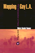
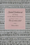

Browse
other Author lists:
A B C
D E F
G H I
J K L
M N O
P Q R
S T U
V W X
Y Z |
 |
Going
by the Book
The Problem of Regulatory Unreasonableness
Bardach,
Eugene and Robert A. Kagan
350 pp • Spring 1982
paper 978-0-87722-252-1
cloth 978-0-87722-251-4 |
|
Not
for the Poor Alone
European Social Services
Kahn,
Alfred J. and Sheila B. Kamerman
197 pp • Fall 1975
cloth 978-0-87722-045-9 |
|
AIDS,
The Winter War
Kahn,
Arthur D.
224 pp • 6x9 • Fall 1992
cloth 978-1-56639-018-7 |
 |
Helping
America's Families
Kahn,
Alfred H. and Sheila B. Kamerman
311 pp • Fall 1981
cloth 978-0-87722-212-5 |
 |
The
Phillies Encyclopedia
Westcott,
Rich and Frank Bilovsky, foreword by Harry Kalas
696 pp • 9x12 • Spring 2004
cloth 978-1-59213-015-3
|
|
Not
for the Poor Alone
European Social Services
Kahn,
Alfred J. and Sheila B. Kamerman
197 pp • Fall 1975
cloth 978-0-87722-045-9 |
|
Helping
America's Families
Kahn,
Alfred H. and Sheila B. Kamerman
311 pp • Fall 1981
cloth 978-0-87722-212-5 |
|
Men's College Athletics and the Politics of Racial Equality
Five Pioneer Stories of Black Manliness, White Citizenship, and American Democracy
Kaliss, Gregory J.
248 pp • 6x9 • Spring 2012
paper 978-1-4399-0857-0
cloth 978-1-4399-0856-3 |
 |
Women,
Islam and the State
edited
by Kandiyoti, Deniz
256 pp • Fall 1990
paper 978-0-87722-786-1
cloth 978-0-87722-785-4
|
|
Larry
Kane's Philadelphia
Kane,
Larry, foreword by Dan Rather
280 pp • 6x9 • Fall 2000
paper 978-1-56639-961-6
cloth 978-1-56639-806-0
|
 |
AIDS
Alibis
Sex, Drugs, and Crime in the Americas
Kane,
Stephanie
256 pp • 5.5x8.25 • Spring 1998
paper 978-1-56639-628-8
cloth 978-1-56639-627-1
|
 |
Where Rivers Meet the Sea
The Political Ecology of Water
Kane,
Stephanie C.
246 pp • 6x9 • Fall 2012
paper 978-1-4399-0931-7
cloth 978-1-4399-0930-0
|
|
On
the Man Question
Gender and Civic Virtue in America
Kann,
Mark E.
352 pp • Spring 1991
cloth 978-0-87722-807-3 |
 |
The
Future of American Democracy
Views from the Left
edited
by Kann, Mark E.
320 pp • Spring 1983
paper 978-0-87722-289-7
cloth 978-0-87722-288-0 |
 |
Middle
Class Radicalism in Santa Monica
Kann,
Mark E.
336 pp • Spring 1986
paper 978-0-87722-526-3
cloth 978-0-87722-414-3 |
 |
"We Live in the Shadow"
Inner-City KidsTell Their Stories through Photographs
Kaplan, Elaine Bell
208 pp • 6x9 • Spring 2013
paper 978-1-43990-790-0
cloth 978-1-43990-789-4
|

|
Another
Arabesque
Syrian-Lebanese Ethnicity in Neoliberal Brazil
Karam, John Tofik
232 pp • 6x9 • Fall 2006
paper 978-1-59213-540-0
cloth 978-1-59213-539-4
|
 |
Building
America
The Democratic Promise of Public Work
Boyte,
Harry C. and Nancy N. Kari
272 pp • 5.5x8.25 • Spring 1996
paper 978-1-56639-458-1
cloth 978-1-56639-457-4 |
 |
Across
the Red Line
Stories from the Surgical Life
Karl,
Richard C.
160 pp • 5.5x8.25 • Fall 2001
paper 978-1-59213-193-8
cloth 978-1-56639-912-8
|

|
Suicide Squeeze
Taylor Hooton, Rob Garibaldi, and the Fight against Teenage Steroid Abuse
Kashatus, William C.
266 pp • 6x9 • Fall 2016
cloth 978-1-4399-1438-0 |
 |
Dancing the Fairy Tale
Producing and Performing The Sleeping Beauty
Katz Rizzo, Laura
194 pp • 5.5x8.25 • Fall 2014
paper 978-1-43991-122-8
cloth 978-1-43991-121-1 |
|
The
Women's Movements of the United States and Western Europe
Consciousness, Political Opportunity, and Public Policy
edited
by Katzenstein, Mary Fainsod and Carol McClurg Mueller
366 pp • 6x9 • Spring 1987
paper 978-1-56639-012-5
cloth 978-0-87722-463-1 |
 |
Policy
and Politics in West Germany
The Growth of a Semisoverign State
Katzenstein,
Peter J.
464 pp • Spring 1987
paper 978-0-87722-264-4
cloth 978-0-87722-263-7 |
 |
The
Korean War
Challenges in Crisis, Credibility, and Command
Kaufman,
Burton I.
400 pp • Spring 1986
cloth 978-0-87722-418-1 |
 |
Addressing Violence Against Women on College Campuses
edited by Kaukinen, Catherine, Michelle Hughes Miller, and R�chael A. Powers
330 pp • 6x9 • Spring 2017
paper 978-1-4399-1376-5
cloth 978-1-4399-1375-8 |
|
E.
P. Thompson
Critical Perspectives
edited
by Kaye, Harvey J. and Keith McClelland
350 pp • Spring 1990
paper 978-0-87722-742-7
cloth 978-0-87722-730-4
|
|
Nomads
of the Present
Social Movements and Individual Needs in Contemporary Society
Melucci,
Alberto, edited by John Keane and Paul Mier
320 pp • Fall 1988
cloth 978-0-87722-599-7 |
|
The
Suburban Racial Dilemma
Housing and Neighborhoods
Keating,
W. Dennis
288 pp • 6x9 • Spring 1994
paper 978-1-56639-148-1
cloth 978-1-56639-147-4
|
 |
Atlanta
Race, Class, and Urban Expansion
Keating,
Larry
248 pp • 6x9 • Fall 2000
paper 978-1-56639-821-3
cloth 978-1-56639-820-6
|
 |
Women
Reading Women Writing
Self-Invention in Paula Gunn Allen, Gloria Anzald�a, and Audre
Lorde
Keating,
AnaLouise
256 pp • 5.2x8.25 • Spring 1996
paper 978-1-56639-420-8
cloth 978-1-56639-419-2
|

|
The International Monetary Fund and Latin America
The Argentine Puzzle in Context
Kedar, Claudia
264 pp • 6x9 • Fall 2012
cloth 978-1-4399-0909-6
|

|
Forgotten Philadelphia
Lost Architecture of the Quaker City
Keels, Thomas H.
320 pp • 10x8 • Fall 2007
cloth 978-1-59213-506-6
|

|
Sesqui!
Greed, Graft, and the Forgotten World's Fair of 1926
Keels, Thomas H.
400 pp • 6x9 • Fall 2016
cloth 978-1-4399-0329-2 |
 |
Polka
Happiness
Keil,
Charles, Angeliki V. Keil and Dick Blau
288 pp • 8x10 • Fall 1992
paper 978-1-56639-462-8
cloth 978-0-87722-819-6 |
 |
The
Social Origins of Democratic Socialism in Jamaica
Keith,
Nelson W. and Novella Z. Keith
352 pp • 6x9 • Spring 1992
cloth 978-0-87722-906-3 |
|
Accidental Immigrants and the Search for Home
Women, Cultural Identity, and Community
Kelley, Carol E.
190 pp • 6x9 • Spring 2013
paper 978-1-4399-0946-1
cloth 978-1-4399-0945-4 |
 |
Letters
of Charles Demuth, American Artist, 1883-1935
edited
by Kellner, Bruce
216 pp • 5.5x8.25 • Spring 2000
paper 978-1-56639-781-0
cloth 978-1-56639-780-3
|
|
Understanding Breast Cancer Risk
Kelly,
Patricia T.
195 pp • Spring 1991
paper 978-0-87722-813-4
cloth 978-0-87722-812-7 |
 |
Policy
and Politics in the United States
The Limits of Localism
Kelly,
E. W.
416 pp • Spring 1987
paper 978-0-87722-268-2
cloth 978-0-87722-267-5 |
 |
American Dunkirk
The Waterborne Evacuation of Manhattan on 9/11
Kendra, James and Tricia Wachtendorf
194 pp • 5.5x8.25 • Spring 2016
paper 978-1-4399-0821-1
cloth 978-1-4399-0820-4
|
|  |
Mapping
Gay L.A.
The Intersection of Place and Politics
Kenney,
Moira Rachel
240 pp • 5.5x8.25 • Spring 2001
paper 978-1-56639-884-8
cloth 978-1-56639-883-1
|

|
Life, Liberty, and the Mummers
Kennedy III, E. A.
192 pp • 8.5x11 • Fall 2007
cloth 978-1-59213-588-2
|
 |
Dr. Radway's Sarsaparilla Resolvent
Kephart, Beth
266 pp • 5.5x8.5 • Spring 2013
paper 978-0-98404-296-8
|

|
Flow
The Life and Times of Philadelphia's Schuylkill River
Kephart, Beth
120 pp • 5.5x8.25 • Spring 2007
paper 978-1-59213-637-7
cloth 978-1-59213-636-0 |

|
Love
A Philadelphia Affair
Kephart, Beth
New in Paperback!
176 pp • 5.5x8.5 • Fall 2017
paper 978-1-4399-1316-1
cloth 978-1-43991-315-4 |
 |
"Batting
Cleanup, Bill Conlin"
edited
by Kerrane, Kevin, foreword by Dick Schaap
240 pp • 6x9 • Spring 1997
cloth 978-1-56639-541-0
|
 |
Credit
Where It's Due
Development Banking for Communities
Parzen,
Julia Ann and Michael Hall Kieschnick
288 pp • 5.5x8.25 • Fall 1992
paper 978-1-56639-185-6
cloth 978-0-87722-811-0 |

|
Nearest East
American Millennialism and Mission to the Middle East
Kieser, Hans-Lukas
224 pp • 6x9 • Spring 2010
paper 978-1-4399-0223-3
cloth 978-1-4399-0222-6
|

|
Wrongful Conviction
International Perspectives on Miscarriages of Justice
Edited by Huff, C. Ronald and Martin Killias
New in Paperback!
326 pp • 6x9 • Spring 2010
paper 978-1-59213-646-9
cloth 978-1-59213-645-2
|
 |
Asian
American Literature
An Introduction to the Writings and Their Social Context
Kim,
Elaine H.
363 pp • Spring 1982
paper 978-0-87722-352-8
cloth 978-0-87722-260-6 |

|
The
New Chicago
A Social and Cultural Analysis
edited by Kim, Kiljoong, John P. Koval, Larry Bennett, Michael
I. J. Bennett, Fassil Demissie and Roberta Garner
384 pp • 7x10 • Fall 2006
paper 978-1-59213-088-7
cloth 978-1-59213-087-0
|

|
The
Racial Logic of Politics
Asian Americans and Party Competition
Kim, Thomas P.
208 pp • 6x9 • Fall 2006
paper 978-1-59213-549-3
cloth 978-1-59213-548-6
|
 |
To
Reason Why
The Debate about the Causes of U.S. Involvement in the Vietnam
War
edited
by Kimball, Jeffrey P.
216 pp • Spring 1990
cloth 978-0-87722-709-0 |
 |
The
Politics of Manhood
Profeminist Men Respond to the Mythopoetic Men’s Movement
(And the Mythopoetic Leaders Answer)
edited
by Kimmel, Michael S.
400 pp • 6x9 • Fall 1995
paper 978-1-56639-366-9
cloth 978-1-56639-365-2 |
 |
Revolution
A Sociological Interpretation
Kimmel,
Michael S.
294 pp • Spring 1990
paper 978-0-87722-741-0
cloth 978-0-87722-736-6 |
 |
The
Sign of the Burger
McDonald's and the Culture of Power
Kincheloe,
Joe L.
240 pp • 5.5x8.25 • Fall 2001
paper 978-1-56639-932-6
cloth 978-1-56639-931-9
|
 |
Writing
Wrongs
The Work of Wallace Shawn
King,
W. D., foreword by John Lahr
264 pp • 5x9 • Spring 1997
cloth 978-1-56639-517-5 |
|
Heroes
in Hard Times
Cop Action Movies in the U.S.
King,
Neal
282 pp • 5.5x8.25 • Spring 1999
paper 978-1-56639-702-5
cloth 978-1-56639-701-8
|
 |
Music,
Talent, and Performance
A Conseratory Cultural System
Kingsbury,
Henry
228 pp • 5.5x8.25 • Fall 1987
paper 978-1-56639-891-6
cloth 978-0-87722-516-4
|
|
Achieving
Against the Odds
How Academics Become Teachers of Diverse Students
edited
by Kingston-Mann, Esther and Tim Sieber
240 pp • 6x9 • Spring 2001
paper 978-1-56639-851-0
cloth 978-1-56639-850-3
|
 |
Philadelphia
Murals and the Stories They Tell
Golden,
Jane, Robin Rice and Monica Yant Kinney, photographs by David
Graham and Jack Ramsdale
160 pp • 9x11 • Fall 2002
cloth 978-1-56639-951-7
|
 |
Working
Poor
Farmworkers in the United States
Griffith,
David and Ed Kissam with Jeromino Camposeco, Anna Garc�a, Max
Pfeffer, David Runsten, and Manuel Valdes Pizzini
368 pp • 6x9 • Fall 1994
paper 978-1-56639-239-6
cloth 978-1-56639-238-9 |
|  |
Sound
Sentiment
An Essay on the Musical Emotions
Kivy,
Peter, foreword by Joseph Margolis
304 pp • Fall 1989
paper 978-0-87722-677-2
cloth 978-0-87722-641-3 |
 |
Movements in Times of Democratic Transition
edited by Klandermans, Bert and Cornelis van Stralen
382 pp • 6x9 • Fall 2014
paper 978-1-43991-181-5
cloth 978-1-43991-180-8 |
 |
Women
of the New Right
Klatch,
Rebecca E.
264 pp • Spring 1987
paper 978-0-87722-590-4
cloth 978-0-87722-470-9 |

|
Trial Courts as Organizations
Ostrom, Brian J., Ostrom, Charles W., Jr., Hanson, Roger A., and Kleiman, Matthew
204 pp • 5.5x8.25 • Spring 2007
cloth 978-1-59213-630-8
|
 |
Dominican Baseball
New Pride, Old Prejudice
Klein, Alan
200 pp • 6x9 • Spring 2014
paper 978-1-4399-1088-7
cloth 978-1-4399-1087-0
|
 |
Gardens
of Philadelphia and the Delaware Valley
Klein,
Jr., William M., photographs by Derek Fell
320 pp • 8x10 • Spring 1995
cloth 978-1-56639-313-3 |
 |
Philadelphia
Neighborhoods, Division, and Conflict in a Post-Industrial City
Adams,
Carolyn, David Bartelt, David Elesh, Ira Goldstein, Nancy Kleniewski
and William Yancey
224 pp • 6x9 • Fall 1991
paper 978-1-56639-078-1
cloth 978-0-87722-842-4
|
 |
Dilemmas
of Activism
Class, Community, and the Politics of Local Mobilization
edited
by Kling, Joseph M. and Prudence S. Posner
384 pp • Spring 1990
cloth 978-0-87722-696-3 |

|
Civic Talk
Peers, Politics, and the Future of Democracy
Klofstad, Casey A.
200 pp • 6x9 • Fall 2010
paper 978-1-4399-0273-8
cloth 978-1-4399-0272-1
|

|
New Advances in the Study of Civic Voluntarism
Resources, Engagement, and Recruitment
edited by Klofstad, Casey A.
294 pp • 6x9 • Fall 2016
paper 978-1-4399-1325-3
cloth 978-1-4399-1324-6
|
 |
Building Drexel
The University and Its City, 1891–2016
edited by Dilworth, Richardson and Scott Gabriel Knowles
400 pp • 6x9 • Fall 2016
cloth 978-1-4399-1420-5 |
|
The
Critical Study of Work
Labor, Technology, and Global Production
edited
by Baldoz, Rick, Charles Koeber and Philip Kraft
296 pp • 7x10 • Spring 2001
paper 978-1-56639-798-8
cloth 978-1-56639-797-1
|

|
Pedagogy of Democracy
Feminism and the Cold War in the U.S. Occupation of Japan
Koikari, Mire
New in Paperback!
240 pp • 6x9 • Spring 2010
paper 978-1-59213-701-5
cloth 978-1-59213-700-8
|
|
Jews
Against Zionism
The American Council for Judaism, 1942-1948
Kolsky,
Thomas A.
288 pp • 6x9 • Fall 1990
paper 978-1-56639-009-5
cloth 978-0-87722-694-9 |

|
Universities
in the Age of Corporate Science
The UC Berkeley-Novartis Controversy
Konefal, Jason, Alan P. Rudy, Dawn Coppin, Bradley T. Shaw,
Toby A. Ten Eyck, Craig Harris and Lawrence Busch
256 pp • 6x9 • Fall 2006
cloth 978-1-59213-533-2
|
 |
Tiananmen Fictions Outside the Square
The Chinese Literary Diaspora and the Politics of Global Culture
Kong, Belinda
292 pp • 6x9 • Spring 2012
paper 978-1-4399-0759-7
cloth 978-1-4399-0758-0 |
 |
The
Man in the Dugout
Baseball's Top Managers and How They Got That Way
Koppett,
Leonard
424 pp • 7x10 • Fall 1999
cloth 978-1-56639-745-2
|
 |
Koppett's
Concise History of Major League Baseball
Koppett,
Leonard
521 pp • 7x10 • Fall 1998
cloth 978-1-56639-638-7 |
 |
P
Is for Philadelphia
Korman,
Susan
64 pp • 10x8 • Spring 2005
cloth 978-1-59213-107-5
|
|
Sisterhood
and Solidarity
Workers' Education for Women, 1914-1984
Frederickson,
Mary and Joyce L. Kornbluh
Fall 1984
cloth 978-0-87722-328-3 |

|
Trilogy of Social Ethics
Orthodox - Catholic - Protestant
Gabriel, Ingeborg G., Ulrich H.J. Körtner and Alexandros K. Papaderos
320 pp • 6x9 • Fall 2013
paper 978-0-931214-16-5 |
|
The
New Chicago
A Social and Cultural Analysis
edited by Koval, John P., Larry Bennett, Michael I. J. Bennett,
Fassil Demissie, Roberta Garner and Kiljoong Kim
384 pp • 7x10 • Fall 2006
paper 978-1-59213-088-7
cloth 978-1-59213-087-0
|
 |
Life's
America
Family and Nation in Postwar Photojournalism
Kozol,
Wendy
232 pp • 8.5x11 • Spring 1994
paper 978-1-56639-221-1
cloth 978-1-56639-152-8 |
|
The
Critical Study of Work
Labor, Technology, and Global Production
edited
by Baldoz, Rick, Charles Koeber and Philip Kraft
296 pp • 7x10 • Spring 2001
paper 978-1-56639-798-8
cloth 978-1-56639-797-1
|
 |
Hybridity,
or the Cultural Logic of Globalization
Kraidy,
Marwan M.
240 pp • 6x9 • Spring 2005
paper 978-1-59213-144-0
cloth 978-1-59213-143-3
|

|
The New Freedom and the Radicals
Woodrow Wilson, Progressive Views of Radicalism, and the Origins of Repressive Tolerance
Kramer, Jacob
New in Paperback!
242 pp • 6x9 • Spring 2017
paper 978-1-4399-0839-6
cloth 978-1-4399-0838-9 |

|
The University Against Itself
The NYU Strike and the Future of the Academic Workplace
edited by Krause, Monika, Mary Nolan, Michael Palm and Andrew Ross
280 pp • 6x9 • Fall 2007
paper 978-1-59213-741-1
cloth 978-1-59213-740-4
|
|
Dirty
Details
The Days and Nights of a Well Spouse
Cohen,
Marion Deutsche, foreword by Marty Wyngaarden Krauss
224 pp • 5.5x8.25 • Spring 1996
paper 978-1-56639-426-0
cloth 978-1-56639-425-3
|
 |
Jewish
Identity
edited
by Goldberg, David Theo and Michael Krausz
344 pp • 6x9 • Spring 1993
paper 978-1-56639-040-8
cloth 978-1-56639-039-2 |
 |
Envisioning Emancipation
Black Americans and the End of Slavery
Willis,
Deborah and Barbara Krauthamer
New in Paperback!
240 pp • 7x10 • Spring 2017
paper 978-1-4399-0986-7
cloth 978-1-4399-0985-0
|
 |
The
Mirror Dance
Identity in a Women's Community
Krieger,
Susan
224 pp • Spring 1983
paper 978-0-87722-314-6
cloth 978-0-87722-304-7 |
|
Advice
and Planning
Krieger,
Martin H.
230 pp • Spring 1981
cloth 978-0-87722-217-0 |
 |
My
Father's Testament
Memoir of a Jewish Teenager, 1938-1945
Gastfriend,
Edward, afterword by Bj�rn Krondorfer
187 pp • 5.5x8.25 • Fall 1999
paper 978-1-56639-735-3
cloth 978-1-56639-734-6
|
|
The
Evolution of an American Town
Newtown, New York, 1642-1775
Kross,
Jessica
277 pp • Fall 1982
cloth 978-0-87722-277-4 |
 |
The
Global Emergence of Gay and Lesbian Politics
National Imprints of a Worldwide Movement
edited
by Adam, Barry D, Jan Willem Duyvendak and Andr� Krouwel
448 pp • 6x9 • Fall 1998
paper 978-1-56639-645-5
cloth 978-1-56639-644-8
|
 |
Aesthetic
Legacies
Krukowski,
Lucian
264 pp • 5.5x8.25 • Fall 1992
cloth 978-0-87722-972-8 |
 |
Making
Equity Planning Work
Leadership in the Public Sector
Krumholz,
Norman and John Forester, foreword by Alan A. Altshuler
271 pp • 6x9 • Spring 1990
paper 978-0-87722-701-4
cloth 978-0-87722-700-7 |
 |
Reinventing
Cities
Equity Planners Tell Their Stories
Krumholz,
Norman and Pierre Clavel
272 pp • 6x9 • Fall 1994
paper 978-1-56639-210-5
cloth 978-1-56639-209-9 |

|
Engineering
Culture
Control and Commitment in a High-Tech Corporation
Kunda, Gideon
Revised Edition
320 pp • 6x9 • Fall 2006
paper 978-1-59213-546-2
cloth 978-1-59213-545-5
|
 |
Animals,
Property, and the Law
Francione,
Gary L., foreword by William M. Kunstler, Esq.
368 pp • 6x9 • Spring 1995
paper 978-1-56639-284-6
cloth 978-1-56639-283-9
|
 |
East Is West and West Is East
Gender, Culture, and Interwar Encounters between Asia and America
Kuo, Karen
220 pp • 5.5x8.25 • Fall 2012
paper 978-1-4399-0587-6
cloth 978-1-4399-0586-9
|
|
Prison
Masculinities
edited
by Sabo, Don, Terry A. Kupers and Willie London
296 pp • 7x10 • Fall 2000
paper 978-1-56639-816-9
cloth 978-1-56639-815-2
|
 |
In
the Shadow of War
Memories of a Soldier and Therapist
Student,
Menachem, foreword by Terry A. Kupers
192 pp • Spring 1991
cloth 978-0-87722-789-2 |